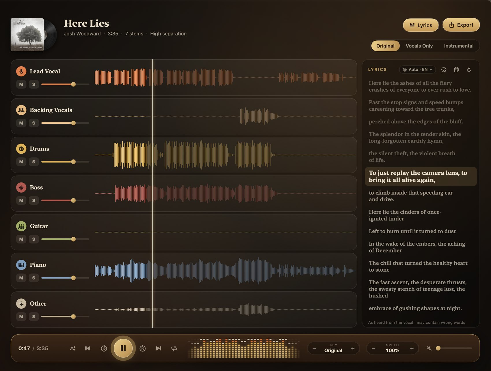
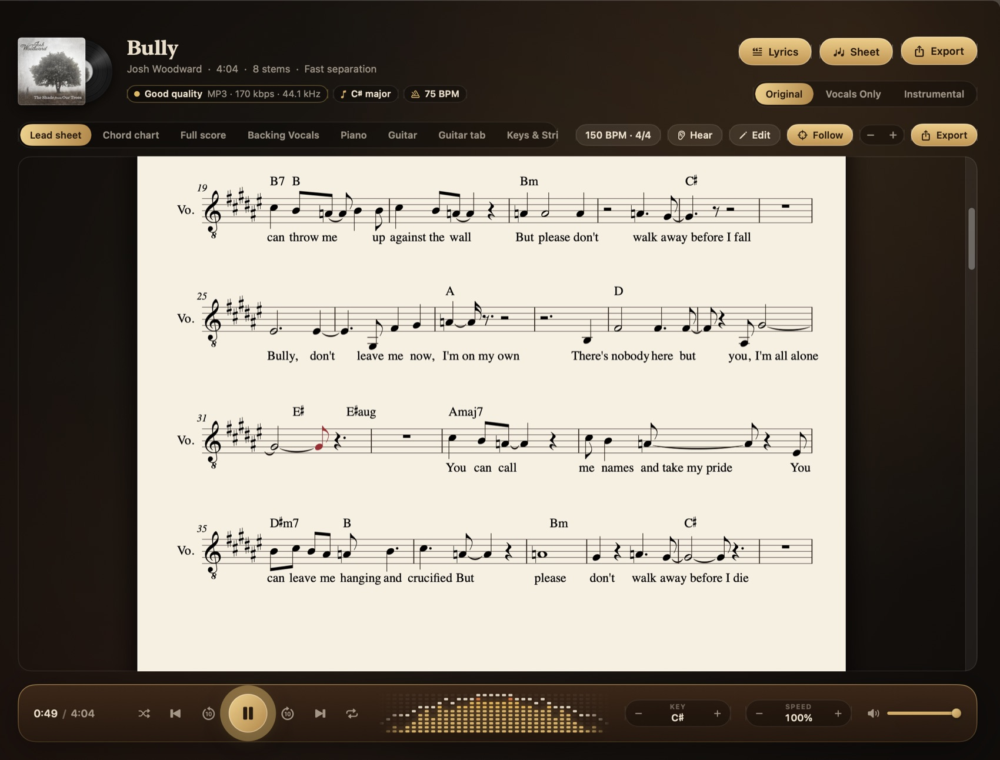
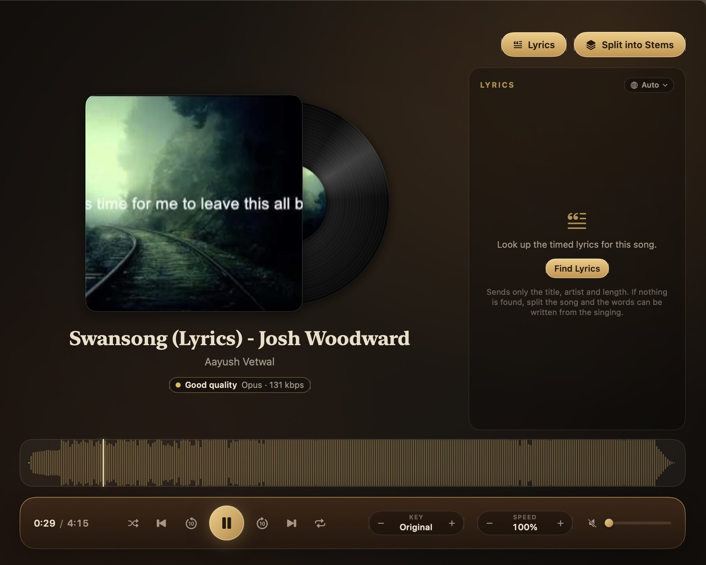

Jsolator is a free Mac app that plays your music, splits any song into vocals, drums, bass, guitar and piano, and writes the sheet music. Everything runs on your own Mac.
Download for Mac
Listen first. When you want the vocal on its own, or the song without it, one button splits it.
Vocals and instrumental, or the full band: lead and backing vocals, drums, bass, guitar, piano and the rest. Each on its own fader, with mute and solo.
Splitting happens on your Mac's own chip. Your music is never uploaded anywhere.
Shift a song up or down by semitones, slow it down to learn a part, and export it that way.
Timed lyrics follow the singing. The key, tempo and chords are worked out for you.
Keep the songs you practise in playlists, mark favourites, and let the library play through.
Save any stem, or your own mix of them, as WAV, FLAC or M4A.
A lead sheet with melody, chords and lyrics, a chord chart, a full score, guitar tab and a part for each instrument, written from the stems in under a minute. Import a PDF, a photo or a MusicXML file too, then edit it, play it, and move the whole sheet to another key.
Click a note to change it, drag it up or down, retype a chord, halve the tempo or move the bar line. Every change can be undone.
Print the score, or open it in MuseScore, Sibelius, Finale, Dorico, Logic or GarageBand.
Split a song, press Sheet, and Jsolator listens to each stem and writes it down. The notes light up as the song plays, the score changes key with the player, and Hear plays the written notes along with the recording so a wrong one stands out. It is a draft to check by ear, and the built-in editor makes that quick.

Drop in a file or search for a song and it plays straight away, with a waveform to jump around in, timed lyrics and a play bar that moves with the music. Split it later, or never.

The download is small. The separation model (about 700 MB) is fetched once, the first time you split a song, and the sheet music models (about 250 MB) the first time you write a score. Reading a PDF or photo of sheet music uses a separate score reader (about 245 MB), fetched the first time you import one.
Yes. Jsolator is free to download and use while it is in testing.
Macs with Apple Silicon (M1, M2, M3, M4 or newer) on macOS 14 or later. 16 GB of memory is comfortable; 8 GB works in the app's low-memory mode. Intel Macs are not supported.
On a recent Mac, about half a minute for a four-minute song at Fast quality, about a minute at High, and around three minutes at Studio quality.
Jsolator checks this site for a new version and offers it in the app. One click downloads it, checks that it really comes from us, and reopens the app on the new version.
The sung melody, the bass line and the chords usually come out well. Piano is good, guitar and other instruments are rougher, and drums are a sketch. Treat every score as a draft: play it with Follow and Hear on, then fix what is wrong in the editor or export it to your notation app.
Yes. Drop a PDF, a scan, a photo or a MusicXML file on Jsolator. Clear printed scores read best, and the notes come in without lyrics or chord names. You can then fix notes, change the key of the whole piece, play it and export it. Reading printed pages is done by homr, separate free software (AGPL-3.0) that Jsolator downloads the first time you need it.
No. Splitting, sheet music, lyrics from the vocal, key and chord detection all run on your Mac. Looking up lyrics online sends only the song's title, artist and length.
Music you own or have the right to use. Please respect the rights of artists and the terms of any service you take music from.